Difensori
3 Sergi Gómez (DC)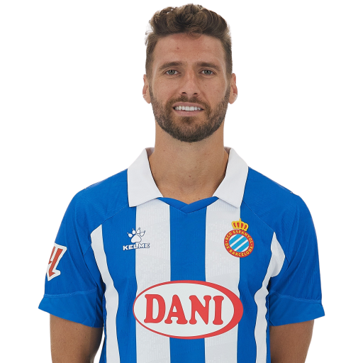
4 Marash Kumbulla (DC)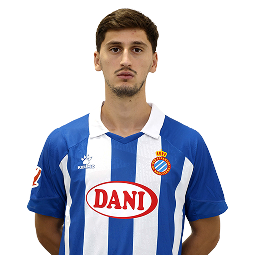
5 Fernando Calero (DC)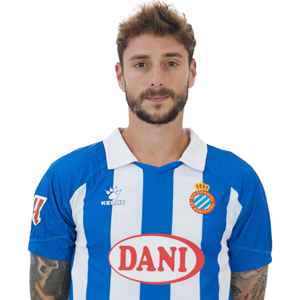
6 Leandro Cabrera (DC)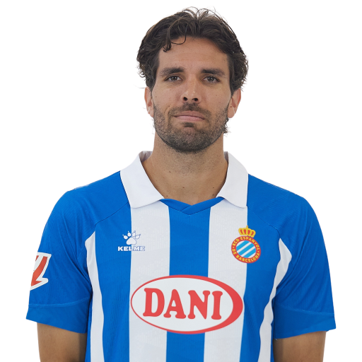
12 Álvaro Tejero (TD)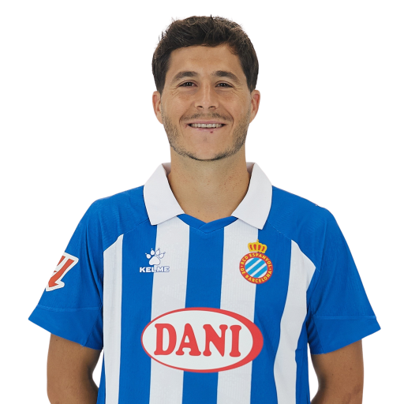
14 Brian Oliván (TS)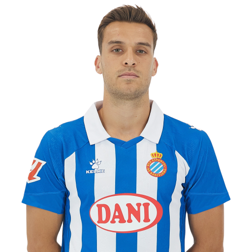
22 Carlos Romero (TS)
23 Omar El Hilali (TD)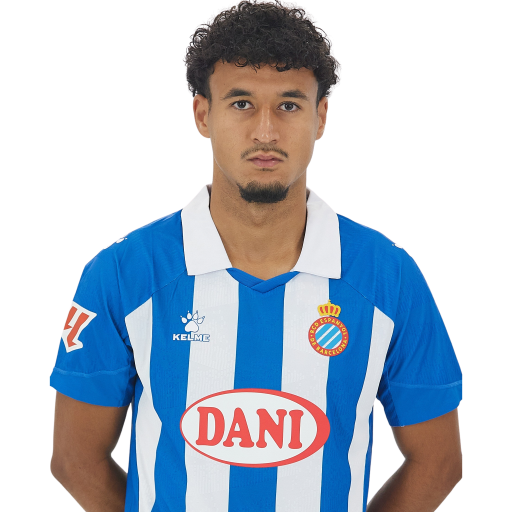
Attaccanti
7 Javi Puado (AS)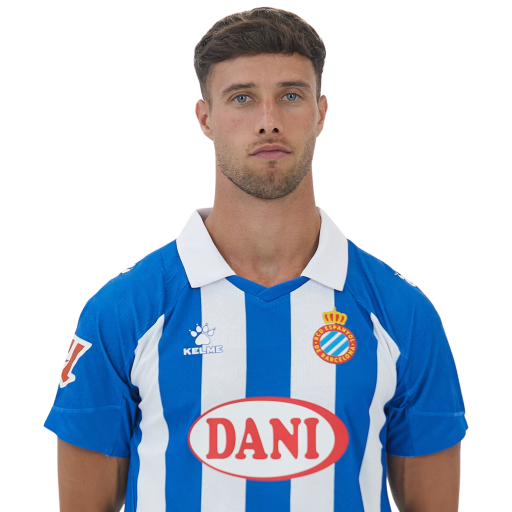
9 Alejo Veliz (AT)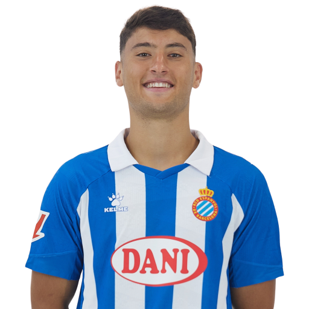
11 Pere Milla (AS)
16 Walid Cheddira (AT)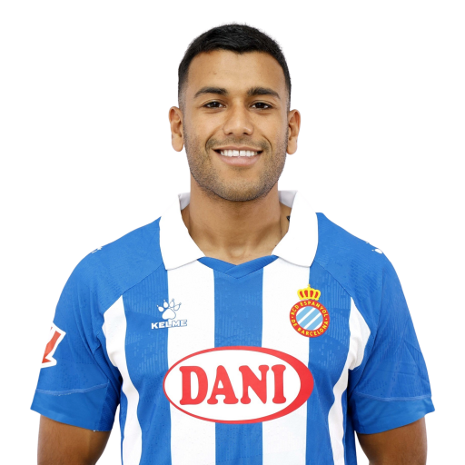
17 Jofre Carreras (AD)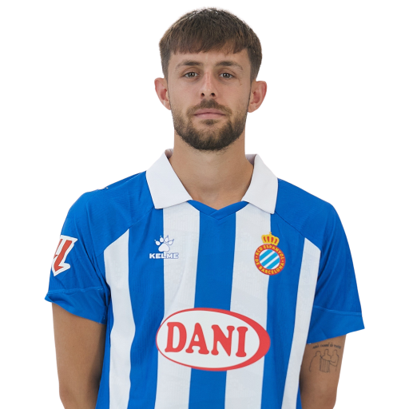
19 Salvi Sánchez (AD)
24 Irvin Cardona (AT)
32 Omar Sadik (AT)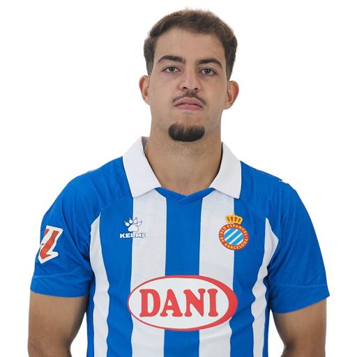
37 Naci Ünüvar (AS)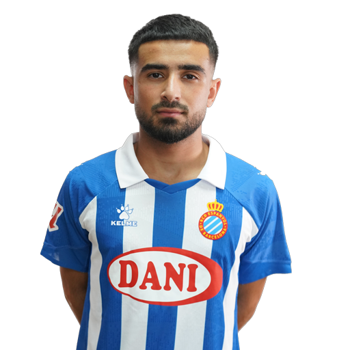